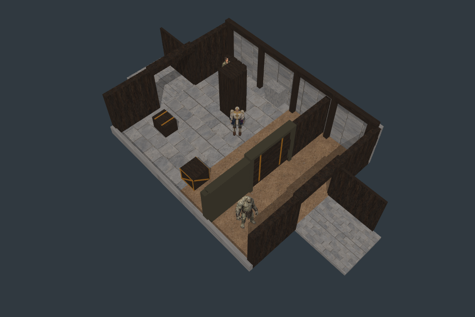
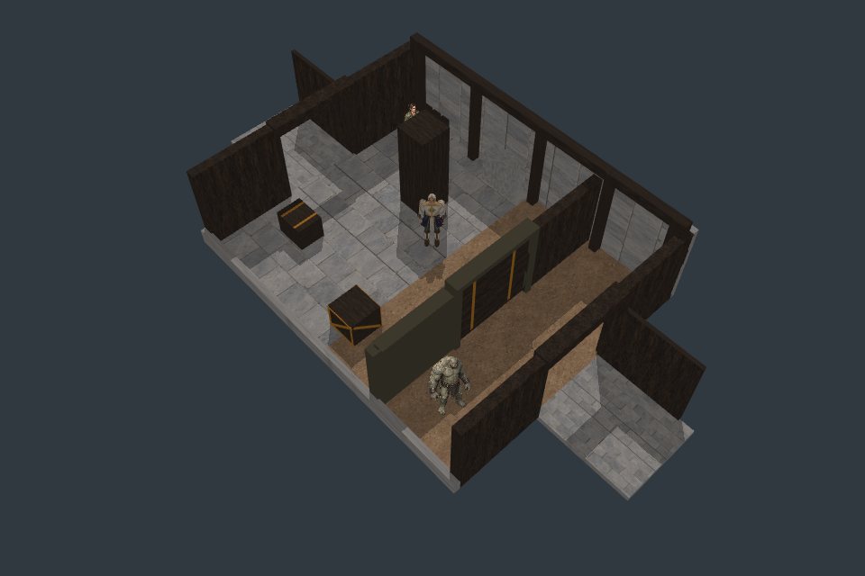
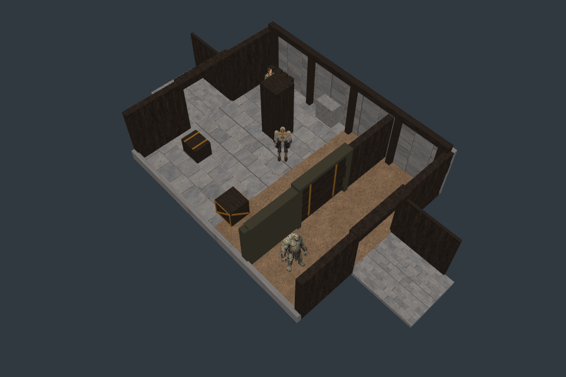
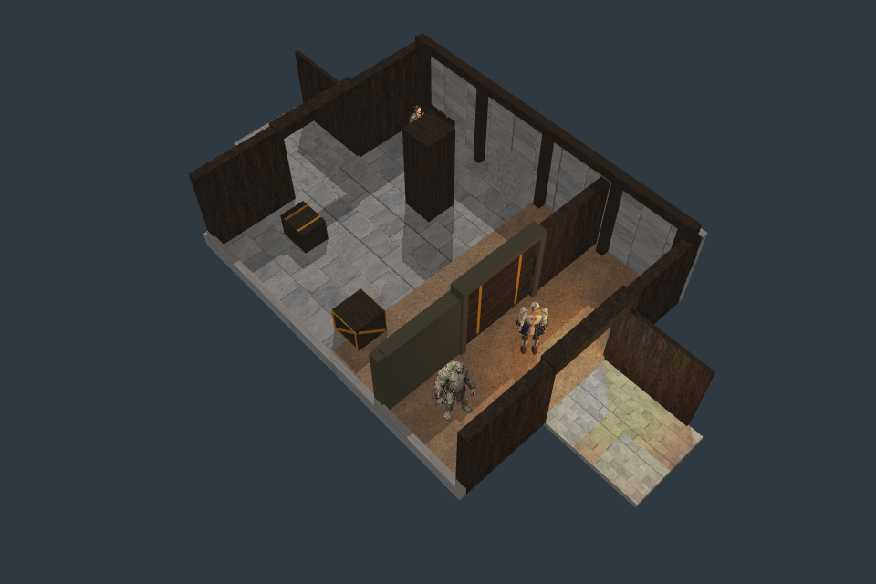
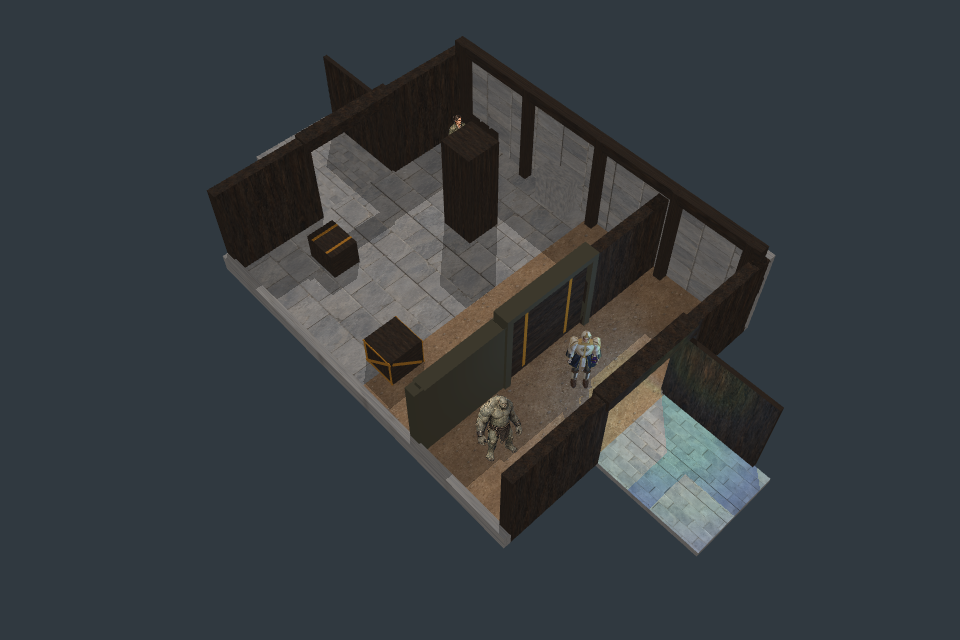

Godot shipping target; Pixi harness. All 1,302 available source witnesses and actual chamber controls pass. Full art and general self-shadow coverage remain unqualified.



Neither key becomes a final style choice. Hard-shadow geometry is the tested mechanism; both light directions retain explicit source evidence.


21 distinct intermediate door states in 0.5s. Local walk composition p95 20.4ms; video frame counts are lower than runtime observations and do not establish 60fps. Shadow buffer format arithmetic:230.7MB; full residency and minimum hardware unmeasured.
The player can still disappear behind walls. Next: a selective visibility aid driven by neutral data. F01's dark pocket, final faction detail, other actors and VFX remain open. Report · Live test (local server required)